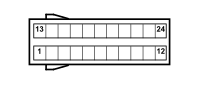

M060B AIR BAG CONTROL UNIT (REAR)
- Path
- Electrical equipment > 3 CONNECTORS > M INTERMITTENT AND TIMED ELECTRONIC DEVICES > M060 AIR BAG CONTROL UNIT > M060B AIR BAG CONTROL UNIT (REAR)
- Kind
- connector pinout (pin -> wire colour -> other end)
- Applies to
- all engines; all production periods
- Interactive page
- https://sloeber94.github.io/elrnDB-fPnd/en/#/169003452
Applies to: all engines; all production periods

Wiring | Colour |
|---|---|
- |
Pin | Cable | Destination | |||
|---|---|---|---|---|---|
Sec.. | Colour | Node | Connect. | Pin | |
1 | 0,35 | H (grey) | 1 | ||
2 | 0,35 | B (white) | 2 | ||
3 | 0,35 | G (yellow) | 1 | ||
4 | 0,35 | M (brown) | 2 | ||
13 | 0,5 | A (light blue) | 1 | ||
14 | 0,5 | N (black) | 2 | ||
15 | 0,5 | C (orange) | 2 | ||
16 | 0,5 | L (blue) | 1 | ||
17 | 0,5 | R (red) | 1 | ||
18 | 0,5 | V (green) | 2 | ||
19 | 0,5 | W | 2 | ||
20 | 0,5 | S (pink) | 1 | ||
21 | 0,5 | Z (violet) | 2 | ||
22 | 0,5 | HR (grey with red stripe) | 1 | ||
23 | 0,5 | RN (red with black stripe) | 1 | ||
24 | 0,5 | GV (yellow with green stripe) | 2 | ||
Topics linked from this page (9)
- 25 REAR
- K066 SENSOR FOR DRIVER'S SIDE BAG
- K067 SENSOR FOR PASSENGER SIDE BAG
- Q020 DRIVER'S SEAT BELT PRETENSIONER
- Q021 FRONT PASSENGER SEAT BELT PRETENSIONER
- Q030 DRIVER'S SIDE BAG
- Q031 PASSENGER SIDE BAG
- Q040 DRIVER'S HEAD BAG
- Q041 PASSENGER SIDE HEAD BAG
Topics that link to this page (8)
- K066 SENSOR FOR DRIVER'S SIDE BAG (REAR)
- K067 SENSOR FOR PASSENGER SIDE BAG (REAR)
- Q020 DRIVER'S SEAT BELT PRETENSIONER (REAR)
- Q021 FRONT PASSENGER SEAT BELT PRETENSIONER (REAR)
- Q030 DRIVER'S SIDE BAG (REAR)
- Q031 PASSENGER SIDE BAG (REAR)
- Q040 DRIVER'S HEAD BAG (REAR)
- Q041 PASSENGER SIDE HEAD BAG (REAR)